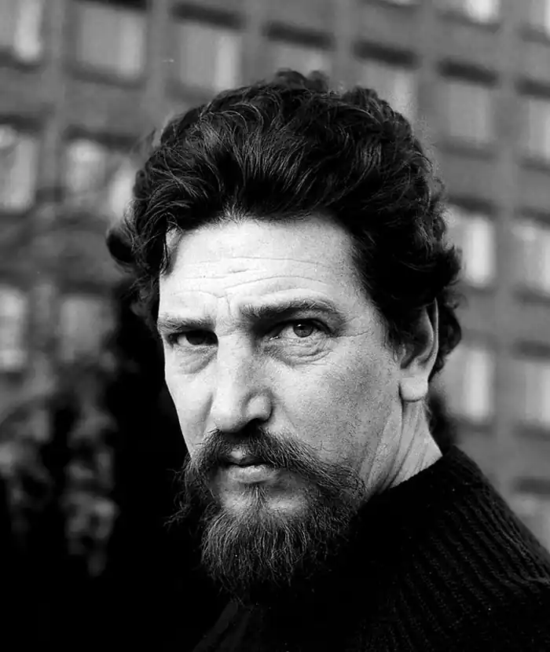

Шведський письменник, майстер детективного жанру, Пер Вале народився в Швеції, прихід Тёлё (швед. Tölö) недалеко від Гетеборга.
Після закінчення Лундського університету з 1946 року працював в різних шведських газетах і журналах репортером зі спортивної та кримінальної хроніці.
У 1950-х роках брав участь у багатьох громадських рухах, в основному ліворадикального толку, в тому числі і за кордоном — зокрема, в Іспанії, що закінчилося його висилкою з цієї країни в 1957 році як персони нон грата. Після повернення до Швеції Вале працював сценаристом на радіо і телебаченні; був також редактором декількох журналів. Як письменник дебютував в 1959 році романом "Коза божа" (Himmelsgeten). Після шлюбу з письменницею травня Шёвалль (1962) працював у співавторстві з нею. Уже в кінці 60-х років їх спільна творчість отримало широку популярність як в Швеції, так і за кордоном. Крім того, Вале написав кілька романів "соло"; найвідоміший з цих романів — "Тридцять третій поверх". Помер в 1975 році в Мальме, у віці неповних 49 років від панкреатиту (згідно з іншими даними, від раку підшлункової залози).